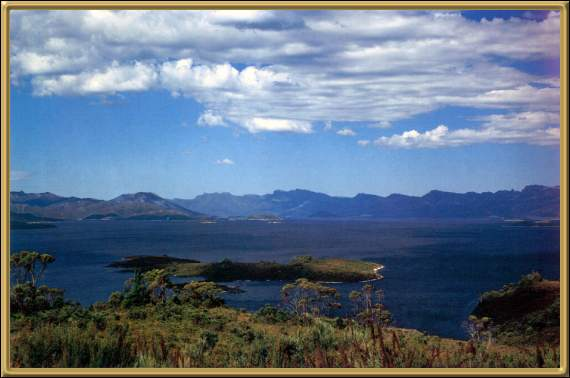

As you can see, Lake Pedder is very beautiful. Apparently when joined with it's sister lake, the Gordon, it makes up the largest inland body of water in Australia. It seems it's well known for it's brown trout.
Photographer: Unknown